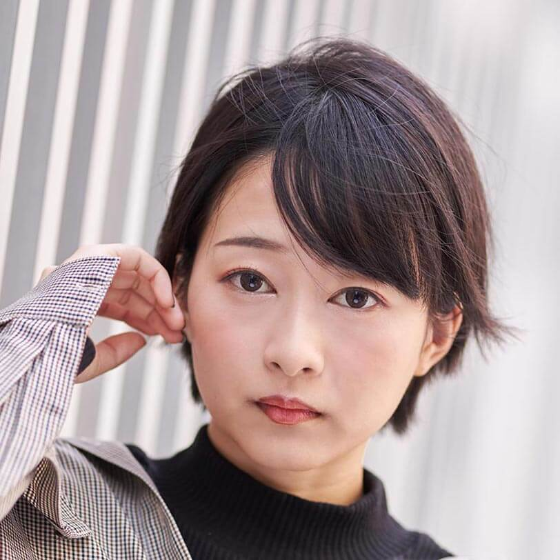

【声マガ・インタビュー】河瀬 茉希
TOPICS
PROFILE
アーツビジョンに所属する河瀬茉希さんは、千葉県出身の12月31日生まれ。『ゾンビランドサガ』（紺野純子役）、『百錬の覇王と聖約の戦乙女』（イングリット役）、『ひそねとまそたん』（星野絵瑠役）等に出演。2019年10月放送の『戦×恋（ヴァルラヴ）』では、早乙女八雲役で出演。
映画鑑賞が趣味の河瀬さん。休みの日は、家にこもって映画を観まくっているそうです。お気に入りは洋画のラブコメや泣ける作品。外画の吹き替えの経験はまだないけれど、「やってみたいです！ ラブコメでめちゃめちゃアメリカンジョーク言いたいです！」と目を輝かせます。そんな河瀬さんに、声優をめざしたきっかけや日本ナレーション演技研究所（以下、日ナレ）で学んだこと、今後の目標について語っていただきました。
イベントで衝撃を受け、声優になると決意
声優という仕事を意識したのはいつ頃ですか？
叔母さんが漫画好きで、小学生の頃、叔母さんの家に行くたびに漫画を読んでいたんです。ある日、その中の作品がアニメ化されることになったので観てみたら、漫画で自分がイメージしていた声とピッタリだったり、イメージとは違っても観ているうちにそのキャラクターの声として感じられるようになったりしておもしろいなと感じました。それをきっかけに、他の作品でも声優さんの声を意識するようになって、すごい仕事だなと思うようになりました。
では、声優をめざしたきっかけを教えてください。
中学生の終わり頃から、アニメやゲームにどっぷりハマっていったんですが、高校2年の秋くらいに友達から、私がかなり影響を受けた作品のイベントに誘われたんです。そのイベントには声優の方が出演されていたのですが、私は声優さんに興味があるわけではなく、作品が好きなだけだったので迷ったんです。でも、朗読劇があると聞いて、新しいセリフが知れるならと思って行ったところ、すごく感動してしまって。私の好きなキャラクターの声と言葉を生で聴けて、ずっと泣きっぱなしだったくらい(笑)。その時、声優さんってカッコいいな、私もなりたいと思ったんです。それまで何かになりたいと強く思ったことはなかったし、普通に大学に行って就職するんだろうとずっと思っていたので、自分自身、その気持ちは衝撃でした。
日ナレを選んだ理由を教えてください。
思い立ったらすぐに行動したくなるタイプなので、イベントに行ったあと、すぐに養成所を探しました。日ナレはレッスンが週1回で高校生でも通えると知って、高校3年に上がると同時に入所しました。
学業との両立は難しくありませんでしたか？
高校卒業後は、進学しないで、声優の道1本でやるつもりになっていたので、親にも先生にもそのように告げました。私はテスト勉強もしっかりやる真面目なタイプだったので、先生たちは当然、大学に行くと思っていたようですが、担任がすごく熱いタイプの先生で、「そこまで言うならやってみろ！」って後押ししてくれました。親も三者面談で「娘がこんなに何かになりたいと言ったのは初めてだから応援したいと思っています」と言ってくれて、まわりのみんなが受験に向かう中、私は、声優になることだけを考えて、1年間を過ごしていました。
当時の生活パターンを教えてください。
親には、「日ナレでかかるお金は、バイトして自分で払うので行かせてください」とお願いし、平日は学校に行って軽音部の部活に出て、その後、バイトをしていました。バイトは高校1年から続けていたところだったので、みんなが私の夢を応援してくれました。日ナレの発表会を控え忙しかった時も、週末のバイトを休めるように協力してもらったりして、まわりに支えられて日ナレに通うことができました。
声優さんが歌って踊るとは知らなかった!
入所した頃の日ナレの印象について教えてください。
同じ夢を追っているクラスメイトや、現場で活躍されている講師に出会って、良い意味でハンパな気持ちじゃここにいられないぞ！ って、声優になるんだという気持ちがより強くなりました。
基礎科で印象に残っていることはありますか？
私のクラスでは挙手制で、手を挙げなければ発表もできないし、見てももらえませんでした。私は元々すごいあがり症で、最初の自己紹介の時も心臓が飛び出るほど緊張したんですが、その半面、目立ちたいという気持ちも持っていたので、だったら一番に手を挙げようって決めました。最初は声が震えたけど、次第に同じ夢をめざしているみんなの中でやることは恥ずかしくないと思えるようになって、それを繰り返すうちに、私の芝居を見ろ！ という気持ちになっていきました。基礎科は自分を出すこと、そして恥ずかしがらずに全力でお芝居をすることを学んだ1年でした。
本科はいかがでしたか？
基礎科では、自分の思う通りにセリフを言えるようになることと、自分が考えた通りに動けるようになることを学びましたが、本科では、セリフの言い回しや表情、動きなどの演出を求められるレッスンだったので、お芝居の難しさを痛感しました。お客さんを楽しませるお芝居をするためには、自分がやりたいことを追求するだけではダメで、見せ方も考えなければいけないんだということを学んだ1年でした。
研修科ではマイク前に立つレッスンがありますが、いかがでしたか？
台本と映像を見ながら、掛け合いの相手との距離感も考えながら、マイク前でどうやってお芝居をすればいいのか、学ぶことはたくさんありました。あと、受講生だけでボイスドラマを作ることになり、私は収録後の編集を担当させてもらったんですが、編集しながら、このセリフはもうちょっと溜めて言ったほうがよかったんじゃないかとか、この人のこの部分は聞き取りづらいなとか、いろいろなことが学べて勉強になりました。
事務所に所属したのはいつですか？
基礎科の終わりの所内オーディションで合格し、アーツビジョンに所属しました。
デビュー当時の作品で最も印象に残っているものを教えてください。
初めてのお仕事はゲームアプリの収録で、初めてのレギュラーはラジオのお仕事でした。中でも印象に残っているのは、それから3年後、初めてのアニメのレギュラー『ひそねとまそたん』です。メインの役をいただいて、嬉しい反面、いろんなものが口から出ちゃうんじゃないかっていうくらい緊張しました(笑)。クールで芯が強いキャラクターなので、声を張り上げたり叫んだりする時も、声が震えたら絶対ダメな役だったんですが、どうしても緊張が解けなくて、初収録はボロボロでした。それまでゲームアプリのお仕事をたくさんやってきたので、監督に「アニメの芝居じゃない」とも言われて、本当に難しかったです。
ゲームアプリとアニメの収録では何が一番違いますか？
一番の違いはゲームは一人で収録することです。その頃の私はプレイヤーに語りかけるシステムボイスが多かったので、ゲームでも掛け合いの経験は少なかったんです。ですがアニメは共演者と一緒に収録するんです。『ひそねとまそたん』の初日は、先輩方がイキイキのびのびとお芝居をしている中で、私だけがただセリフを追うことに必死になって、まわりが見えていなくて、独りよがりな自分だけのお芝居になってしまっていたと思います。
どのように克服したのですか？
相手が出したものに対して応える芝居というのは、日ナレでさんざんやってきたことじゃないかって思ったんです。にもかかわらず、初めてのアニメのレギュラー出演でとなった途端、学んだことが全部飛んじゃって、自分が考えているキャラクターの声で、決められたセリフを言うことだけでいっぱいいっぱいになってしまった。それに気づいてからは、話数を重ねるごとに、のびのびと演じられるようになって、最終回の収録が終わった時には、いつも見に来てくれていたスタッフの方に「本当に成長したよね。初登場の時はどうしようかと思ったよ」と言ってもらえて、本当に嬉しかったです。現場で学んだこともたくさんあるけど、それ以上に、日ナレで経験したことをしっかり出せたと思えた作品でした。
その後、『ゾンビランドサガ』では、歌と踊りも披露されましたね。
日ナレの週3回クラスに入って、歌とダンスも学んでおけばよかったってつくづく感じました (苦笑)。そもそもステップが踏めないし、まったく踊れなくて。他のメンバーはそういった経験がある人たちだったので、自分がついていけないことが辛くて、悔しくて、ひたすら家で練習しました。
声優になったら歌と踊りもやりたいという希望は持っていなかったのですか？
実は、声優さんがキャラクターとして歌って踊ることを知らなかったし、声優をめざすようになってから知っても、｢きっと自分がやることはないんだろうな｣と思っていました。でも、ステージに立ってみて、少し気持ちが変わりました。自分が演じているキャラクターに当てはめてお客さんは観てくれて、私の歌とダンスに感動してくれて、目の前で泣いてくれる人までいて、練習して、頑張ってよかったなって。今後も、河瀬茉希自身として歌って踊ることはないと思うけど、キャラクターとして誰かを喜ばせることができたり、キャラクターのためになったりするなら、頑張ろうって思うようになりました。
いろいろな経験が何よりお芝居の糧になる
お仕事をするようになって、日ナレで学んだことが現場で役立ったと感じたことは他にありますか？
たくさんありますが、まず年齢感ですね。私は求められるキャラクターよりも年上の声を出しがちで、オーディションで「もうちょっと若くしてください」と言われることがあるのですが、その場ですぐに、たとえば5歳若くするというように変えられるようになったのは様々な年齢のクラスメイトたちと一緒に学べたことが大きいです。あと笑いです！ 前の席の男の子の顔に米粒がついていた時の笑いとか、知らない人が目の前で転んだ時の笑いとか、笑いは日ナレでみっちり学んだので、自分の引き出しにいっぱい蓄積されていて、現場で「もっと爆笑してください」とか「もうちょっと落ち着いた感情で笑ってください」と言われた時に、その中から探すことができています。
ご自身が考える声優の魅力について教えてください。
少年から女子高生、ギャル、ヤンキー、セクシーなお姉さん、おばさんなどいろいろな役を演じさせていただけていることは本当に嬉しいし、楽しいです。ただ、私はこのキャラクターが一番得意ですというものがまだないので、今後はそういう自分の強みを見つけていかなければとも思っています。
今後、どんな声優になりたいですか？
役者として、さまざまなキャラクターを演じられるようになりたいというのが第一なのですが、喋ったり、はしゃいだりするのも好きなので、ラジオなど河瀬茉希として出演するものも全力で楽しんで、皆さんにはその二面性を楽しんでいただき、好きになってもらえたら嬉しいなって思います。それから、私も声優さんに衝撃を受けて、この道に進んだので、河瀬茉希みたいになりたいって言ってもらえるような、誰かの憧れになれたら嬉しいです。
最後に声優をめざしている方へメッセージをお願いします。
いろいろな人に会って、いろいろな経験をしてください！ それが何より芝居の勉強になることですから。宝くじは買わなければ当たらないし、山は登らなければ頂上の景色は見えません！ やって損することは絶対ないので、いろいろなことに挑戦してください！
プロフィール
河瀬 茉希
- 所属事務所
- アーツビジョン
主な出演歴
- 戦×恋（ヴァルラヴ）（早乙女八雲）
- ゾンビランドサガ（紺野純子）
- 百錬の覇王と聖約の戦乙女（イングリット）



{kind=link}
{kind=link}
{kind=link}
{kind=link}
{kind=link}
{kind=link}